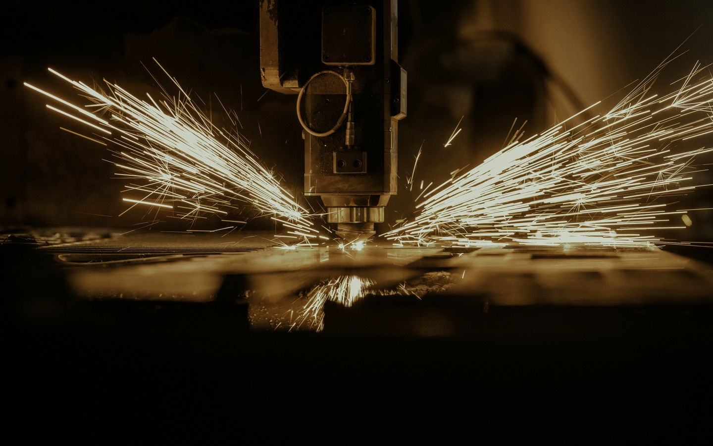
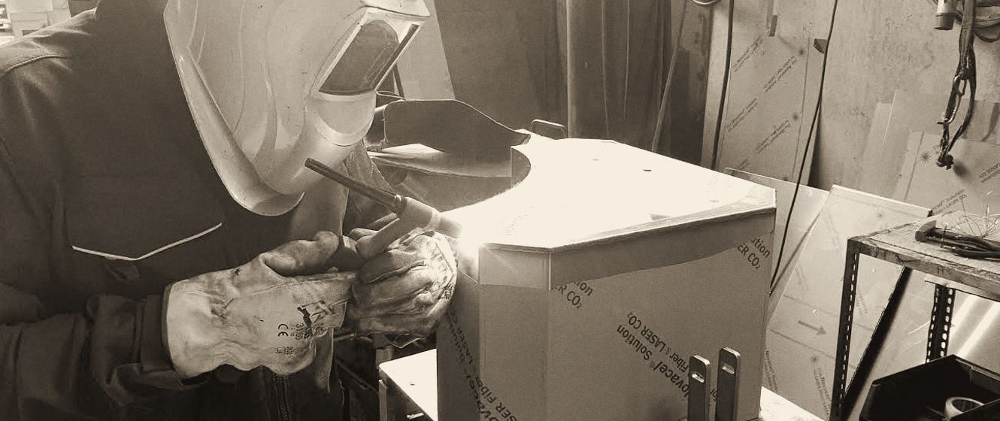
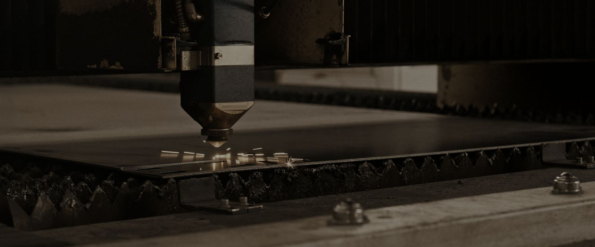

Lamiera
conto terzi
1978la famiglia Volpato
in officina, da allora
Progettiamo, tagliamo, punzoniamo, pieghiamo e saldiamo lamiera sul disegno del cliente. Officina a Tombelle di Vigonovo, tra Padova e Venezia.
Foto indicativa Fino a che spessore tagliamo
Lo spessore,
a grandezza vera
Il laser è un Bystronic Byspeed da 4400 W con carico e scarico automatici e dispositivo antigraffio. Taglia fogli fino a 3000 × 1500 mm. Lo spessore massimo cambia col metallo: sceglilo e guarda la sezione.
Ferrospessore massimo di taglio
Il percorso del pezzo
Dal file al camion, in un'officina sola. Verniciatura, cromatura, sabbiatura e zincatura le seguiamo noi su impianti esterni collegati.
- 01
Progettazione 3D
Ufficio tecnico interno
rendering e prototipo
- 02
Taglio laser
Bystronic Byspeed 4400 W
3000 × 1500 mm
- 03
Punzonatura e cesoia
Finn-Power SG6
pezzo separato e impilato
- 04
Piegatura CNC
Finn-Power 8 assi, Warcom
lunghezza 3100 mm
- 05
Saldatura
MIG e TIG
ferro, inox, alluminio
- 06
Tubi e profili
OMES, Ercolina, Pedrazzoli
curvatura 20 × 20 × 3
- 07
Montaggio e consegna
Due autocarri propri
centinato da 50 q, con gru
Dove finiscono i nostri pezzi
Elettromedicale ed elettronica1, arredo medicale e odontoiatrico2, refrigerazione commerciale3, trattamento dell'aria e dei fluidi4, macchine agricole e movimento terra5, meccanica leggera6
- 1Case metallici per gli apparecchi.
- 2Semilavorati per studi medici e dentistici.
- 3Telai in tubolare per i banchi frigo.
- 4Semilavorati coibentati, con guarnizioni e chiusure.
- 5Particolari complessi.
- 6Carpenteria leggera, per qualsiasi settore meccanico.
Dal ferro battuto
alla lamiera
La famiglia Volpato lavora il metallo dal 1978: prima piccoli manufatti in ferro battuto come FDS Volpato S.n.c., dal 2020 lamiera come Tek.Lam S.r.l. L'ufficio tecnico è in casa e segue il pezzo dall'idea alla consegna.

Saldatura TIG su un cassone inox, con il film protettivo ancora addosso.
Sandro VolpatoUfficio tecnico
Dimitri VolpatoCommerciale

Foto indicativa
Contatti
049 980 14 86Per un preventivo mandate il disegno o il file 3D all'ufficio tecnico, ufftec@teklam.it.
Ufficio tecnicoSandro Volpato
sandro@teklam.it
CommercialeDimitri Volpato
dimitri@teklam.it
commerciale@teklam.it
Informazioniinfo@teklam.it
Fax +39 049 982 90 91
OfficinaVia del Lavoro 68, zona artigianale Tombelle, 30030 Vigonovo (VE)
Vicino al casello Padova Interporto dell'A13. Mappa